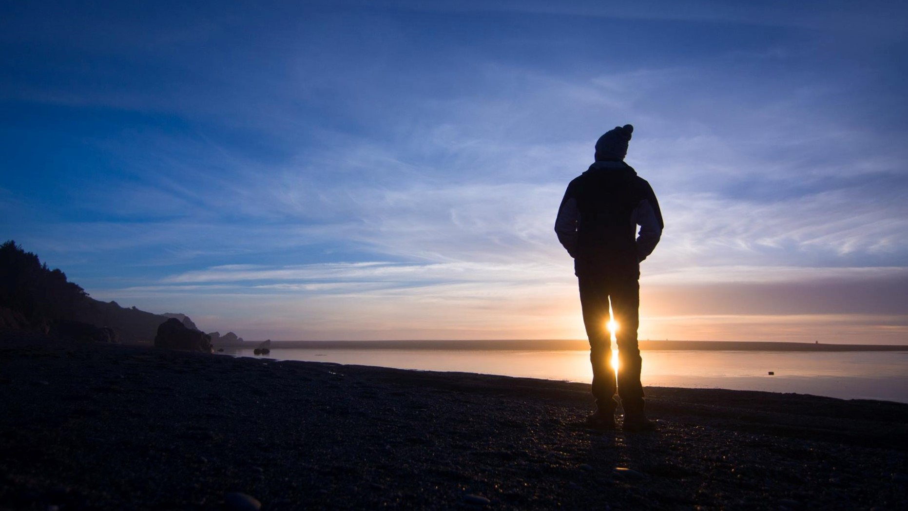

Tamarack Lakes, California


Mount Whitney, California
Hobbies
Among many things, I enjoy travelling and exploring the world. Hiking, camping, and backpacking are some of my favorite activities. I also "actively partake" in photgraphy - primarily by carrying equipment around and occasionally being a prop/model. My (overly-)enthusiastic wife is the one actually taking the pictures and processing them. But the two of us make a good team, and the photos make our travels even more enjoyable! Here are a few of my favorite pictures/trips over the years. The most recent photos were 2018; more updates are desperately needed.
Yubeng, China

Redwoods, California


Other
In addition to travelling, I also foster kittens! In the past, when there was more time, I have volunteered for the Boy Scouts of America. Back in my undergraduate days, I was a part of Sixth College Student Council and would host Winter GameFest, which is a celebration of video-game culture that attracts thousands of people every year! To keep up with my cultural roots (and to get some decent exercise) I participate in the traditional Chinese performance of Lion Dance. That's me in the middle carrying my good friend (and best man) on my head! Another one of my hobbies is cooking, which is really an excuse for indulgent over-eating. I embrace both the traditional cooking of my Malaysian and Chinese heritage, as well as the generic Western cuisines.